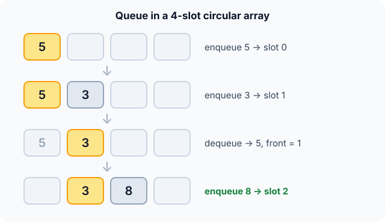

Prerequisites
The analogy
Everyday analogy
Think of a line at a bakery. New customers join at the back, and the person at the front is served first. Nobody cuts in.
A queue keeps that order. In an array we don't move the customers forward; instead the "front of the line" marker moves, and wraps back to slot 0 when it reaches the end.
How it works
Start with a sequence of operations by hand
The queue is an array of 4 slots with front = 0 and size = 0. A new item goes to slot (front + size) % 4. Predict, then open "Check".
Example: predict before you read
Step 1. enqueue 5, enqueue 3. Predict which slots they use.
Check
Slot 0 then slot 1. Now front = 0, size = 2.
Step 2. Cover the next line and guess: what does dequeue return, and does anything shift?
Check
It returns 5, the oldest item. Nothing shifts; front just moves to 1 and size becomes 1.
Step 3. enqueue 8. Predict its slot.
Check
(1 + 1) % 4 = 2. The queue, front to back, is 3, 8.

Quick recall: Before reading further, cover the text above and say out loud: why doesn't dequeue shift the remaining items forward?
Check your answer
Because the front index moves instead. Shifting would cost $O(n)$; moving one index costs $O(1)$.
Finish the picture: wrapping around
Continue from front = 1, holding 3, 8 in slots 1 and 2. Enqueue 1, then 2.
- Enqueue 1. Predict its slot.
Check
(1 + 2) % 4 = 3, the last slot. - Enqueue 2. Predict its slot: the array looks full at the end.
Check
(1 + 3) % 4 = 0: it wraps to slot 0, which was freed by the earlier dequeue. The queue is now full: 3, 8, 1, 2.
Quick recall: Without scrolling up, say out loud: why did the item 2 go into slot 0?
Check your answer
Slot (front + size) % 4 was past the end, so it wrapped around to the free slot at the start.
The rule in plain words
Keep the items in an array with two numbers: front (index of the oldest item) and size.
enqueue writes at (front + size) % capacity. dequeue reads at front and moves it forward, wrapping with %.
Quick recall: Before you read the code, write the steps of enqueue and dequeue in your own words. Then check below.
Check your answer
enqueue: write at (front + size) % capacity, then add 1 to size. dequeue: read at front, move front one step with wrap-around, subtract 1 from size.
The code
Read this code after you have done the operations by hand. It will make more sense.
typedef struct { int data[4]; int front, size; } Queue; /* capacity 4 */
void enqueue(Queue *q, int v) { /* caller checks q->size < 4 */
q->data[(q->front + q->size) % 4] = v;
q->size++;
}
int dequeue(Queue *q) { /* caller checks q->size > 0 */
int v = q->data[q->front];
q->front = (q->front + 1) % 4; /* wrap around */
q->size--;
return v;
}Definition
What you just did, in one line: a queue is a first-in, first-out (FIFO) collection: you enqueue at the back and dequeue from the front.
A circular buffer stores it in an array whose indices wrap around.
flowchart LR
IN["enqueue"] --> R["back: 8"]
R --- M["3"]
M --> F["front: 3 leaves first"]
F --> OUT["dequeue"]
How fast is it?
Quick recall: Before looking at the table, predict: what would dequeue cost if we always kept the front at slot 0?
Check your answer
$O(n)$, because every remaining item would shift one slot left.
Both operations do a fixed amount of index arithmetic. The slot for the next item is:
$$\text{slot} \;=\; (\text{front} + \text{size}) \bmod \text{capacity}$$No loop runs, so enqueue and dequeue are $O(1)$ however many items are waiting.
| Operation | Cost | Why |
|---|---|---|
| enqueue | $O(1)$ | One write at the computed slot |
| dequeue | $O(1)$ | One read, the front index moves |
| front / is_empty | $O(1)$ | Read front or size |
| dequeue in a naive array (shift left) | $O(n)$ | Every item moves one slot |
| Search for a value | $O(n)$ | Not a queue operation |
Warning
Keep a size (or leave one slot empty). With only front and back indices, a full queue and an empty queue look the same: front == back in both cases.
Exam tip
Trace questions use the formula $(\text{front} + \text{size}) \bmod \text{capacity}$. Write front, size and the array after every operation.
Common mistakes
- Shifting all items on dequeue, which turns $O(1)$ into $O(n)$.
- Forgetting the
% capacitywrap, which writes past the end of the array. - Being unable to tell "full" from "empty" because no size is stored.
Try it yourself
Exercise 1 (warm-up)
Starting empty: enqueue 1, enqueue 2, dequeue, enqueue 3, dequeue. Which values are dequeued?
Hint
The oldest item always leaves first.
Answer
1, then 2. The queue ends holding 3.
Exercise 2 (a bit harder)
With capacity 4, start empty and do: enqueue A, B, C; dequeue; dequeue; enqueue D, E. Give front, size and the slot of E. Write your answer down before you open it.
Show answer
After A, B, C: front 0, size 3. Two dequeues: front 2, size 1. D goes to (2+1)%4 = 3, E to (2+2)%4 = 0. Final: front 2, size 3, E in slot 0.
Did you know?
Did you know?
Breadth-first search, the graph algorithm that finds shortest paths in unweighted graphs, is a queue loop: dequeue a node, enqueue its unvisited neighbours.
Your keyboard, network card and printer all use circular buffers like this one, so data arriving faster than it's processed waits in order instead of getting lost.
Key points to remember
If you remember one thing from each line, remember the because.
- The oldest item leaves first because items are added at the back and removed from the front.
- Dequeue is $O(1)$ because the front index moves instead of the items.
- The array is used in a circle because
% capacitysends indices past the end back to slot 0. - A size counter is needed because otherwise full and empty look identical.
- BFS uses a queue because nodes must be processed in the order they were discovered.
Self-check questions
Answer these in order, out loud. They follow the page, so your answers become the script of your video.
- How is a queue like a line at a bakery?
Sample answer
People join at the back and are served from the front, so the first to arrive is the first to leave.
- Walk through enqueue 5, enqueue 3, dequeue, enqueue 8 in a 4-slot circular array.
Sample answer
5 goes to slot 0, 3 to slot 1; dequeue returns 5 and moves front to 1; 8 goes to slot (1+1)%4 = 2. The queue is 3, 8.
- Why does the code use
% 4when computing slots?A good answer mentions the end of the array.
Sample answer
When an index passes the last slot,
% 4wraps it back to slot 0, reusing the space freed by earlier dequeues. - So what is a queue, in one sentence?
Sample answer
A first-in, first-out collection with enqueue at the back and dequeue at the front.
- Why is a circular buffer better than shifting items forward?
A good answer compares the costs.
Sample answer
Shifting moves every remaining item on each dequeue, which is $O(n)$. Moving the front index is $O(1)$.
- What do enqueue, dequeue and front cost?
Sample answer
All three are $O(1)$ in a circular array.
- How do you tell a full queue from an empty one?
Sample answer
Store the size: empty is size 0, full is size equal to the capacity. With only two indices both cases would look like front == back.
- If you had to teach this to a friend in 2 minutes, what would you leave out, and why?
Sample answer
I'd leave out the full-versus-empty detail and the exact modulo trace. I'd keep the bakery analogy, the enqueue/dequeue sequence, and "FIFO, $O(1)$ with a circular array, used by BFS".
External resources
- VisuAlgo: Queue: choose "Queue" and animate enqueue and dequeue.
- GeeksforGeeks: Queue data structure: array, circular and linked-list versions.
- Wikipedia: Circular buffer: the wrap-around idea and the full/empty problem.
Videos
- YouTube search: circular queue explained: pick a walkthrough with index traces.